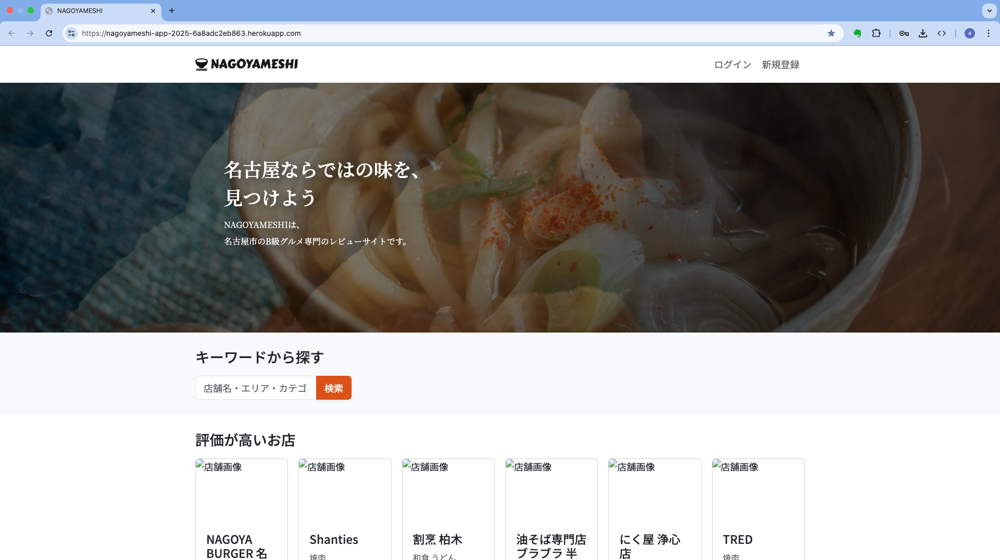

Atakuya（GitHub: atakuya-12915）
Java / Spring Boot 初学者 → 実務レベルでリリースを目指す学習中
Java × Spring Bootでの基盤開発＋Reactへの拡張に挑戦中
Java / Spring Boot 初学者 → 実務レベルでリリースを目指す学習中
Java × Spring Bootでの基盤開発＋Reactへの拡張に挑戦中
"現場目線で『見える化』をつくるフロント寄りバックエンド志向エンジニア"
経歴・実績：工場総務（PCキッティング50台、RPA月5件）、DX推進リーダー、Power BIで可視化経験
大学（化学）→ 大学院（研究） / 衛生管理者 1種, MOS 365 Expert 他
（詳細は職務経歴書に記載）
自己PR：現場の『困りごと』を技術で可視化して解決することに喜びを感じる。失敗を分解して次に活かす姿勢が強み。短期で実務投入できるレベルを目標に、品質を重視してアプリを設計・実装している。
SpringBoot学習の集大成。Herokuにデプロイ済。
コーポレートサイト風にデザイン再現。HTML/CSSの実装力を示す作品。

進行中：認証機能まで実装済。UI改善中。
{// サンプルコード断片
const [todos, setTodos] = useState([]);
useEffect(() => {
fetch("/api/todos")
.then(res => res.json())
.then(setTodos);
}, []);
}完成済：本HTML版をReactへ移植。SPA構成に対応。
GitHub: atakuya-12915
Email: atakuya@mail.com


グリッドレイアウトとレスポンシブ対応を学習しました。
サイトを見る